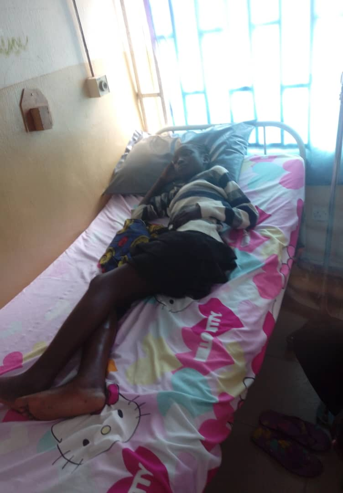
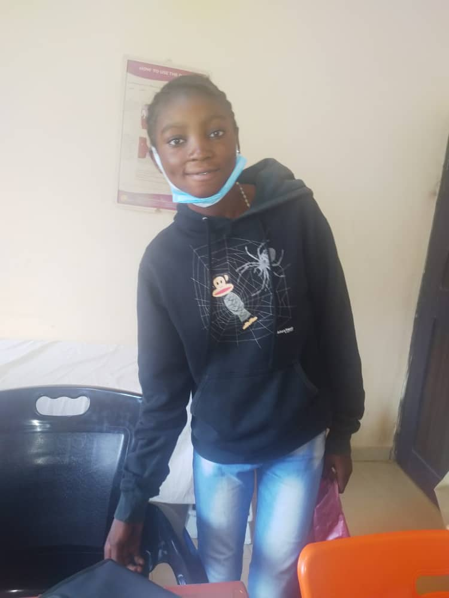
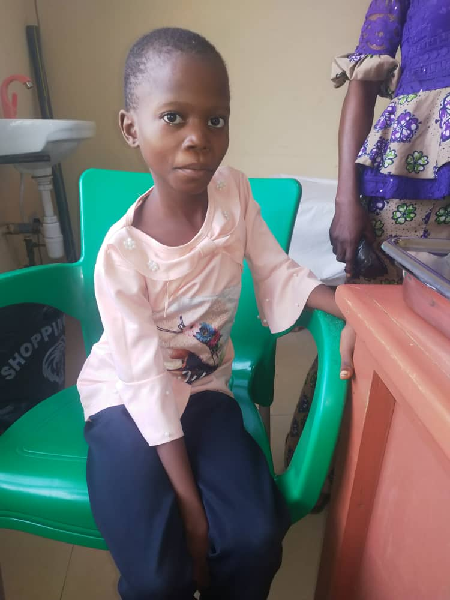
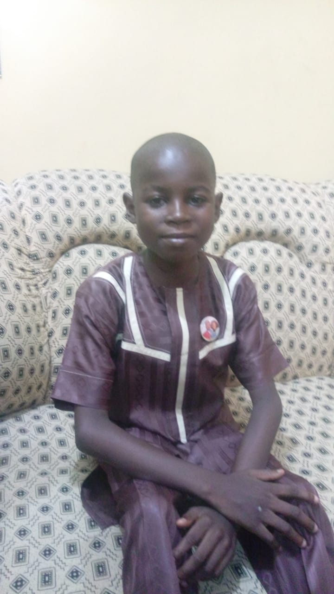
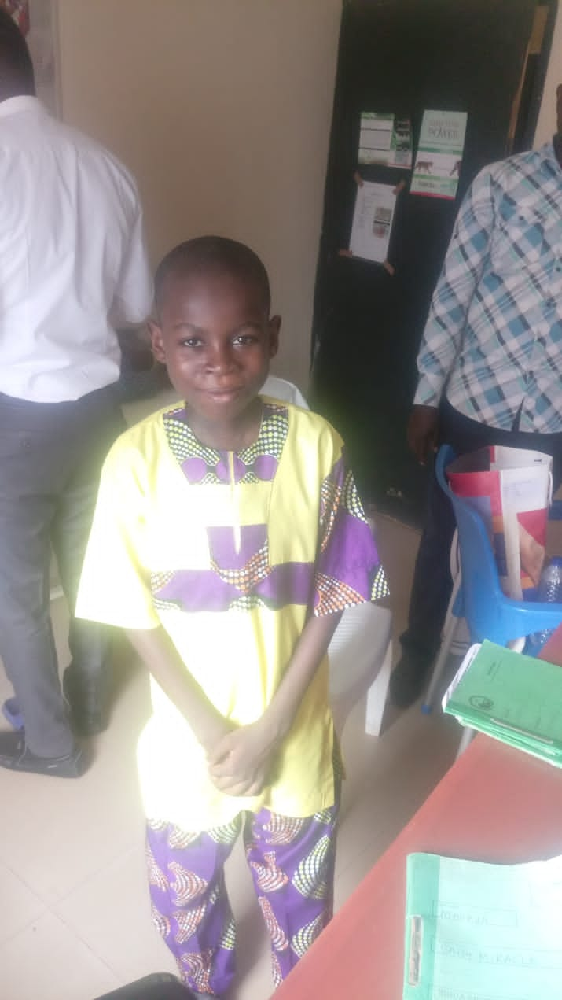
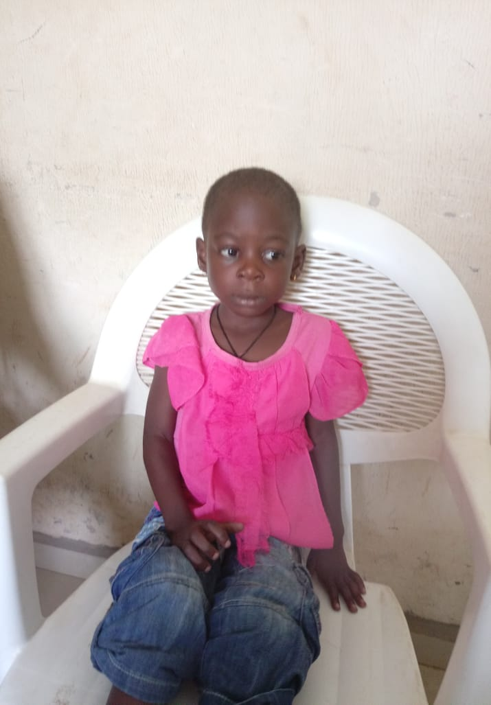
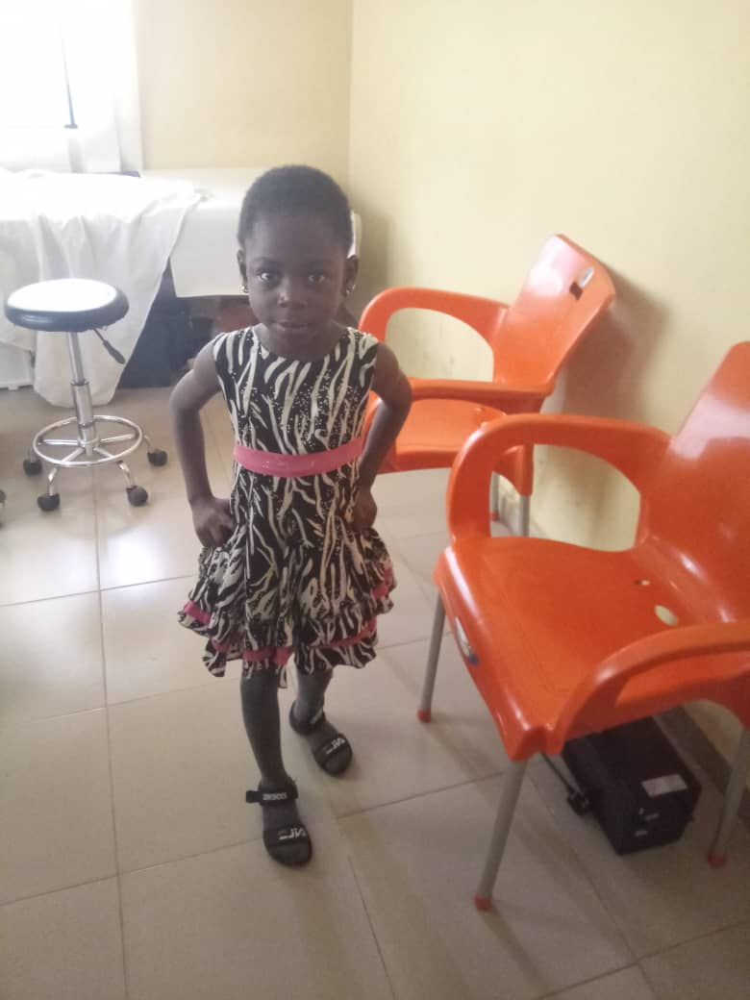

Testimonals

Blessing before the sugery

Blessing two years after the sugery
Blessing was 12 years when she presented with rheumatic heart diseases. Her parents are peasant farmers and could not afford treatment.
The Samara Hearts Foundation helped her free surgery with emergency (NGO).

Akhere before the sugery
Akhere after the sugery
Akhere is 11 years. She had Rheumatic heart disease. She was also assisted by the Samara Hearts Foundation to get curative surgery by emergency. her parents are farmers.

Christopher before the sugery

Christopher after the sugery
Christopher was also assisted by the foundation to get Surgery in MIOT Hospitals Chennai, India.

Amaka before the sugery

Amaka after the sugery
Amaka was 4 years old when she was presented to us. She had Tetralogy of Fallout. the foundation co-operated with Radiance Health and Laser limitedto get corrective surgery in India courtesy of Mending Kids